一个是 2D 像素风的店主模拟，一个是 3D 俯视角的搜打撤射击。技术底子相近，美术路线完全不同。
按内容类别看，哪些已经拆透，哪些只抽了样，哪些还没动。
| 类别 | 《可能是偷的》 | 《逃离鸭科夫》 |
|---|---|---|
| 代码逻辑 | 已拆透 游戏主逻辑全部反编译，按 5 个方向写了拆解笔记 | 已拆透 核心程序集全部反编译，报告覆盖 9 个方向 |
| 数值 / 公式 | 已拆透 难度 41 参数、房租、议价、声望、罪证、定价公式全部带出处 | 重点抽取 伤害、护甲、枪械、镜头、掉落、搜刮读条；物品数值表未逐项导出 |
| 文本 / 叙事 | 已拆透 中英文本 6,900 条/语言；5 条剧情线、18 种结局已梳理 | 文本已导出 71 份对话/任务/物品表（中日英）；剧情结构还没梳理 |
| 场景 | 已还原 店铺主场景按坐标叠图还原；4 个外出地点背景；层级树 3,515 节点 | 已还原 8 张地图导出为 3D 模型，可旋转浏览；26 张小地图、30 张宣传图 |
| 人物 | 全量 约 200 个半身立绘，按派系分组 | 抽样 鸭子本体与部件模型、LV1–6 装备贴图；196 个蒙皮角色没有全量导出 |
| 动作 / 动画 | 全量 只有帧动画：行人走路、顾客中枪倒下等；Unity 动画仅 3 段 | 未拆 238 段动画、37 个状态机都没导出（只统计了数量） |
| 物品 / 图标 | 全量 1,000+ 物品切片，34 张图集 | 全量 1,272 个图标 / UI 切片 |
| 贴图 / 模型 | 全量 907 张贴图（2D 游戏没有模型） | 抽样 4,381 张贴图里导出 299 张；3,887 个模型里导出 16 个 |
| UI 布局 | 部分 UI 素材全导出；界面画布的摆放没还原 | 部分 UI 素材全导出；界面布局没还原 |
| 着色器 / 特效 | 基本不涉及 2D 游戏，64 个着色器只统计了数量 | 参数级 自研着色器的属性和用途已分析；3,182 个粒子系统没导出 |
| 音频 | 未拆 276 段（音效 + 磁带音乐） | 未拆 FMOD 音频库（主库 55MB） |
玩法、数值、叙事、2D 美术基本拆透，只差音频和 UI 布局。
代码架构和地图场景拆得最好；动画、角色、音频、数值表还有空间。另一个任务还在继续拆，这里是 11-09 11:23 的快照。
完成度为按上表类别的粗略估计，不是精确统计。
每位顾客都是一次“审查 + 议价”的赌局，背后是指数涨的房租和两本延迟兑现的暗账（声望、罪证）。
没有倒计时；开门那一刻生成当天顾客队列，人走完就打烊。周日交租，周循环固定上门 NPC。
房租每周 ×1.025 / 1.05 / 1.10；胜利条件是现金买断或高利贷按揭。4 档难度共 41 个参数。
276 种顾客，6 个派系；声望和店铺吸引力改写“谁会来”。
接受率 = 100 − 2×加价% + 声望/6；贪心成交会扣声望。
解锁 40 个派系特权；跌到 −100 会被上门清算。
罪值 → 证据进度 → 判决警官（罚款 / 逮捕 / 处决）；盘查员三种人格；赃物热度每晚 −18。
鉴定、贴假标、被识破共用一个双值结构；约 506 个在用物品。
水、化学、枪械、水培、水产、养鼠、酿酒、销赃，各有利润曲线和“毁灭方式”。
9 个职业、48 个特性、54 个升级（恩惠货币闭环）。
每晚外出一次，代价是次日少一个顾客；彩票返还率约 57%。
能力声明、IL 扫描、签名信任列表、运行时熔断；存档带滚动快照。
飞船、太空、回合制战斗靠 InRaid() => false 一行切断，底层框架改造成店铺。
乔治奥（D6，喜剧）、伦警官（D11，成瘾腐败）、埃莉诺（D23，二选一）、塞尔皮科（D40，三阵营结局）、卢（悬赏追猎）。
欠租、按揭收回、被捕、处决、炸弹……另有现金买断和还清按揭两种胜利。
15 种市场事件改品类价格；派系行动提前 4 天排入；报纸每天播报。
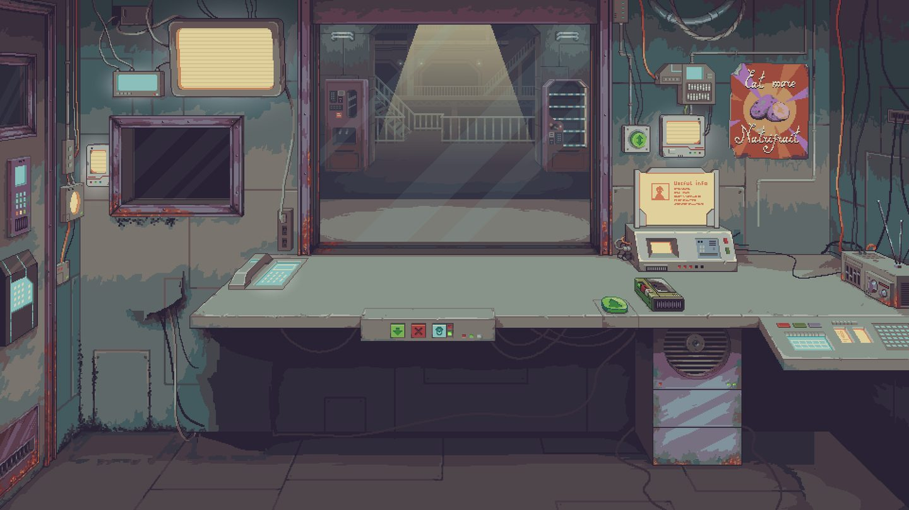
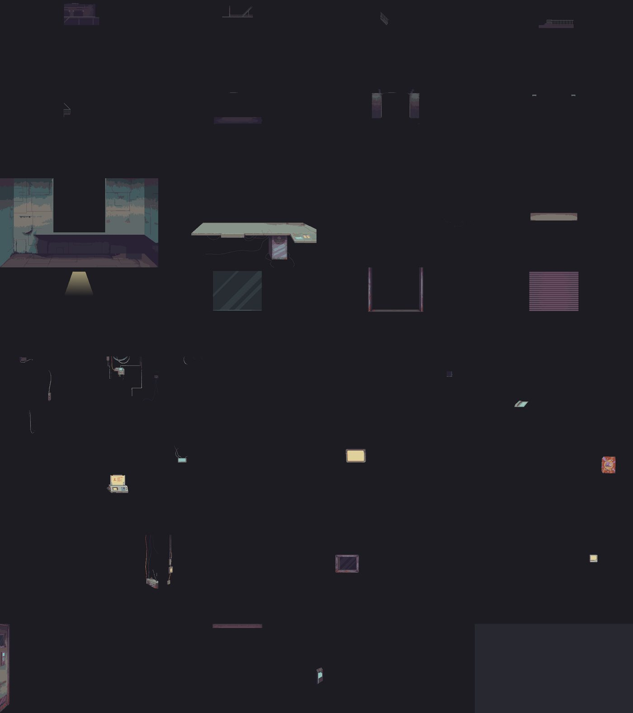
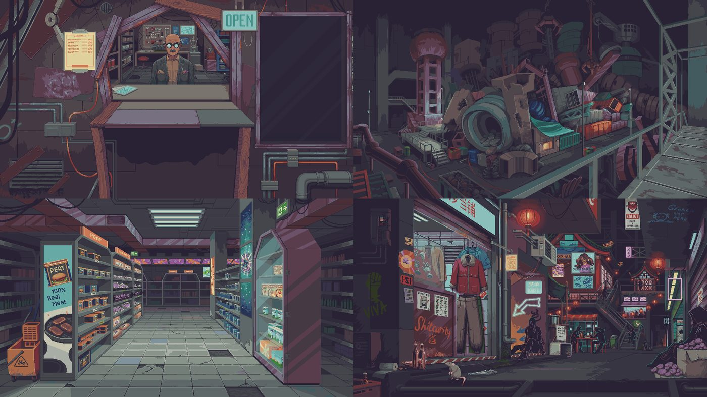
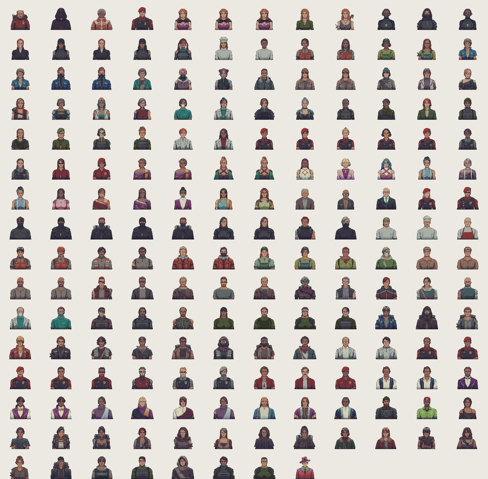
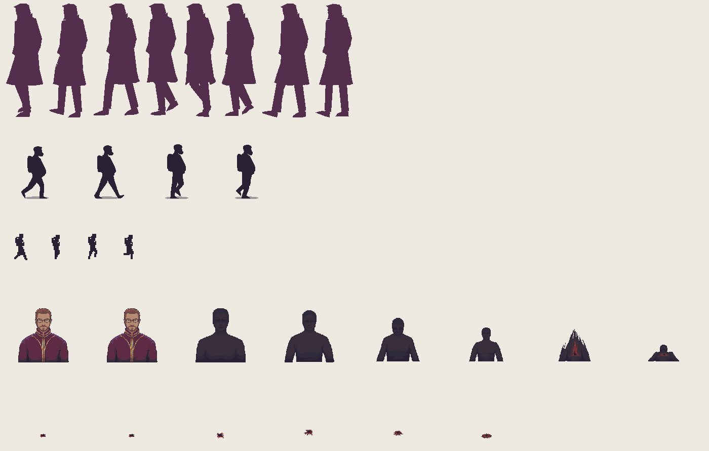
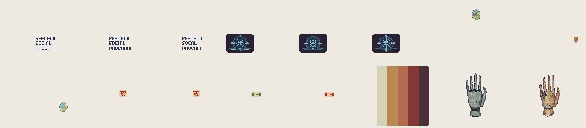
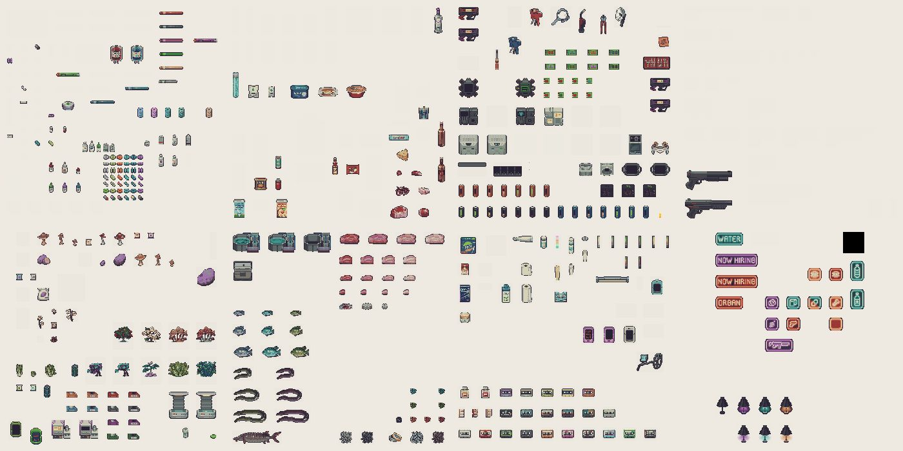
“插件拼装 + 数据驱动 + 小团队高效”：角色、物品、伤害都走统一的 Stat + Item 树；美术用低模小贴图，把预算花在灯光和后处理上。
不是大状态机：新动作优先级 ≥ 当前才能打断；冲刺耗体力 10、冷却 0.5 秒。
暴击即爆头、打头甲；元素伤害按抗性分摊；骨折 / 流血按概率附加。
射速、散布、后坐、穿甲都可被配件 / Buff 修改；特殊枪用组合扩展。
镜头参数挂在 URP Volume 上，美术摆个区域就能平滑改机位。
夜晚视距衰减；枪声脚步广播；NodeCanvas + A* 寻路；敌人按权重随机配装。
基地 → 选图带装 → 搜刮 → 战斗 → 撤离 / 死亡 → 回基地。主场景 + 子场景叠加加载。
搜刮读条时长按品质递增，越稀有越久，制造开箱期待。
约 65 个任务、天赋树、黑市、ATM、挖矿机、合成分解、种植、钓鱼、捏脸。
影响 AI 视野和元素伤害（下雨火伤 −0.15、电伤 +0.2）。
ES3 存档 10 份滚动备份；Mod 只需 info.ini + 同名 DLL；B站埋点 34 种事件。
内置黄金矿工（65 个类）、泡泡龙、贪吃蛇、躲鼠标。
受击闪白、热成像、雪覆盖、换色做成参数；延迟渲染支撑 1,650 盏灯。
数据驱动：任务 → 条件 → 奖励；文本含中日英三语。
对话用 NodeCanvas 编辑；有序章、基地引导、结局等独立场景。
文本已导出，剧情主线和 NPC 关系还没整理成结构图。
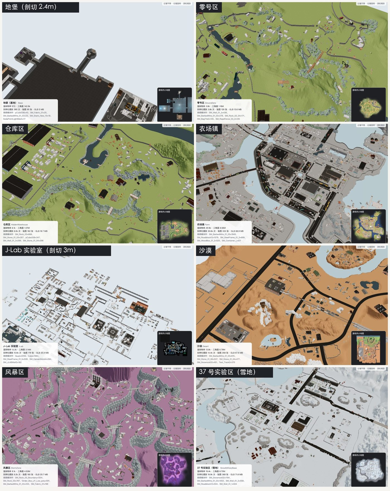
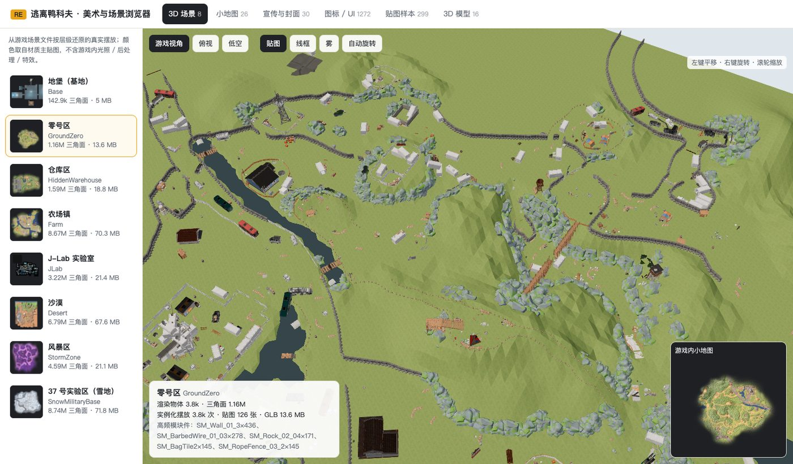
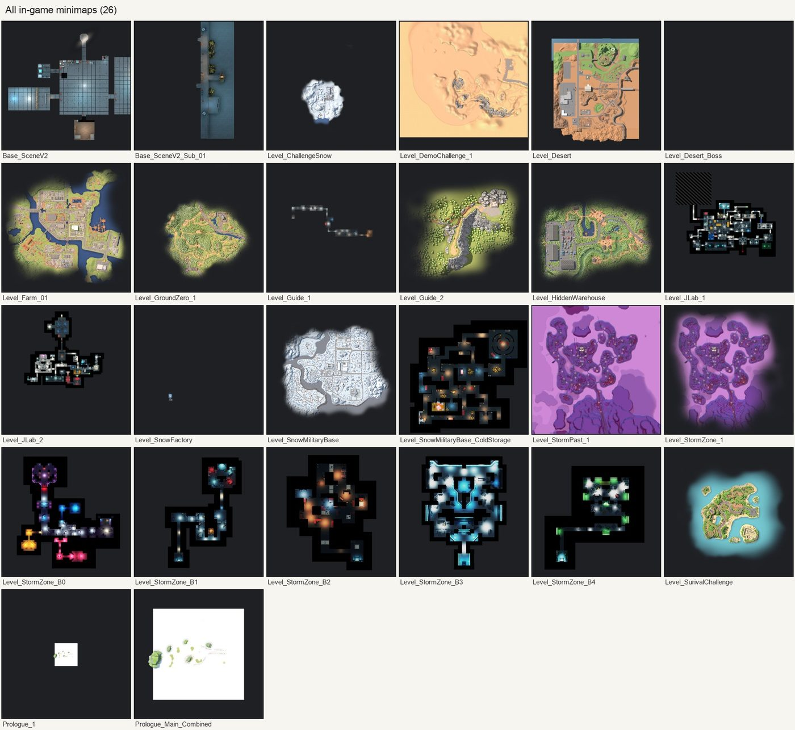
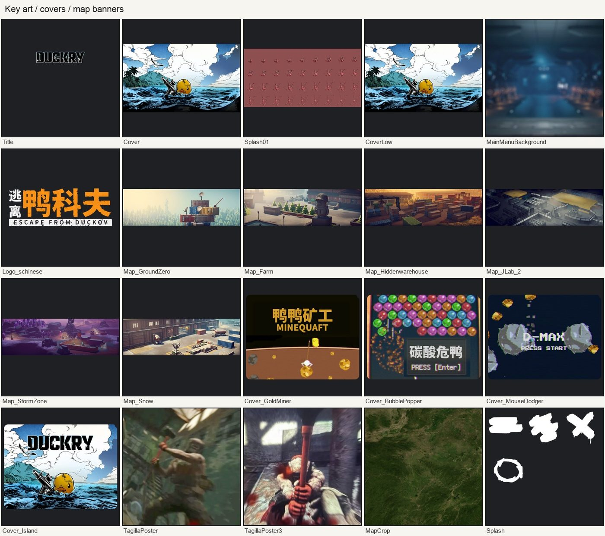
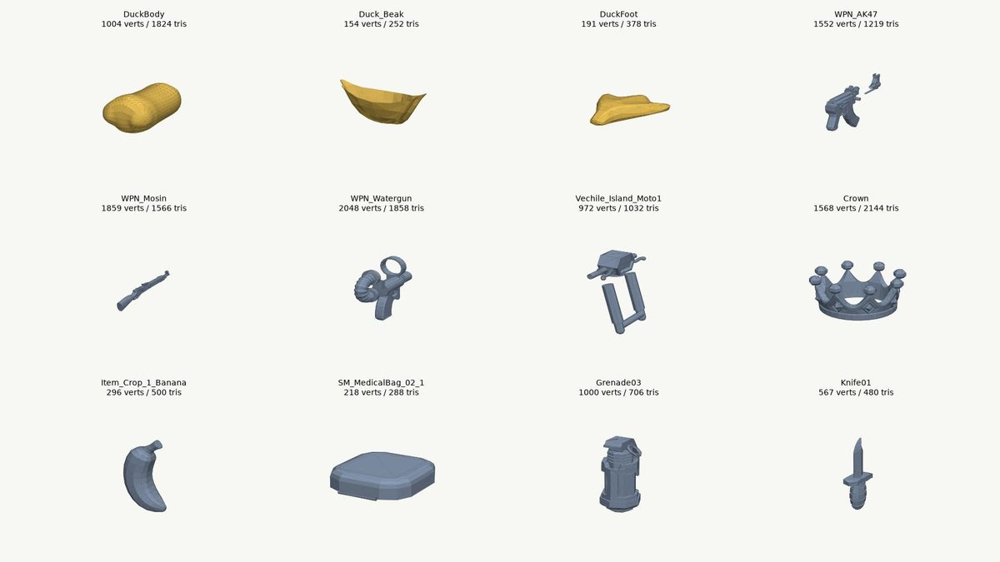
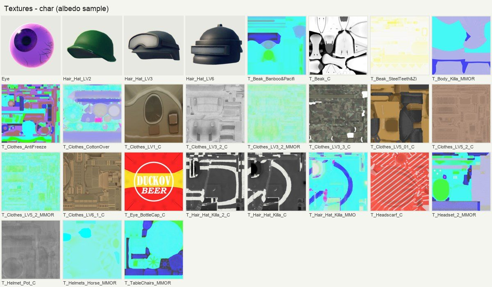
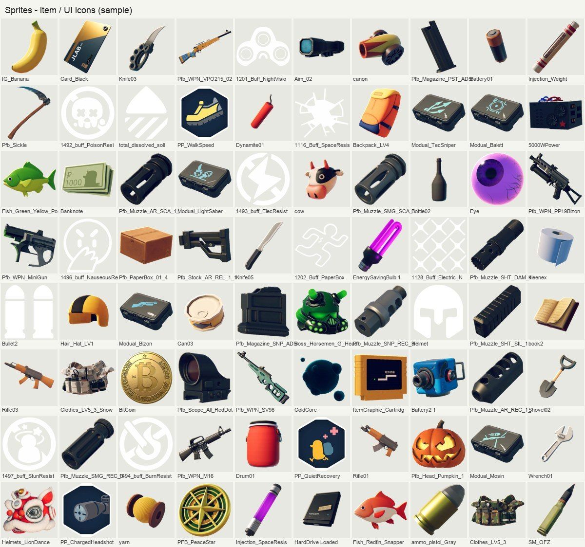
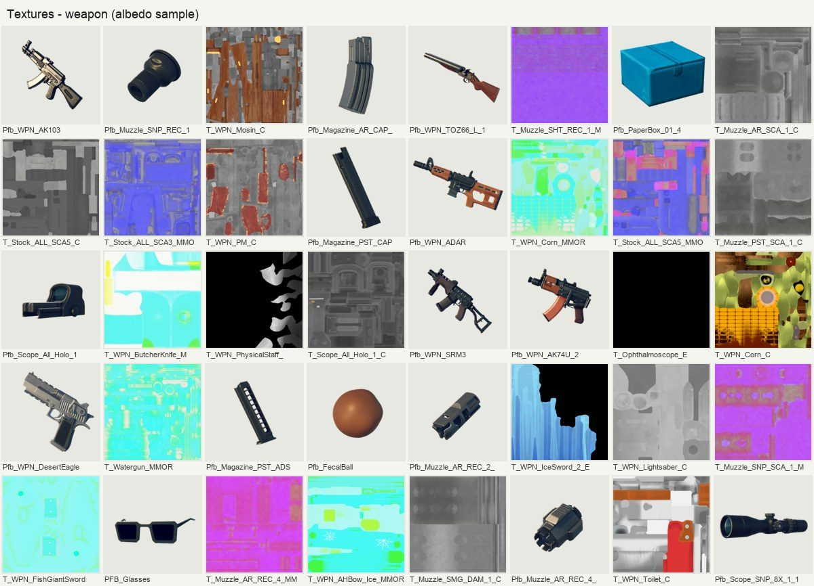
《末日列车》现在的循环是“跑线 → 买卖 → 日结 → 还款”，和《可能是偷的》的经营骨架非常接近，可以直接参考的点不少。
| 内容 | 位置 |
|---|---|
| 《可能是偷的》可视化拆解报告 | probably-stolen/report.html |
| 《可能是偷的》5 份详细笔记（经济 / 顾客风险 / 物品产业 / 成长考古 / 技术） | probably-stolen/notes/ |
| 《逃离鸭科夫》代码 + 美术拆解报告 | escape-from-duckov/report.html |
| 《可能是偷的》美术图鉴（全部贴图、立绘、物品切片） | 仅本机：~/ps_work/art_full/index.html |
| 《逃离鸭科夫》3D 场景浏览器（9 个场景模型，共 274MB） | 仅本机：~/WorkBuddy/spaces/2026_11_07_15-28-09/duckov_re/explorer.html |
| 两边的反编译代码 | 仅本机，不外传 |